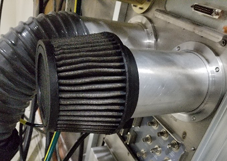

Object ID: 00000018WIA3023C630GYZTopic ID: id_2011663 Version: 5.9Date: Oct 1, 2025, 6:28:07 PMRemoving the body coil blower air flow filter Remove the body coil blower air flow filter. ProcedureMake sure that you have read and understood the electrical safety requirements before starting this procedure. See Electrical Safety.Shut down and power off the host computer. See Shutting down the host computer.Applying LOTO - RF Subsystem (magnet room electronics) and Applying LOTO - PEN Cabinet (magnet room electronics).In the magnet room, loosen the air filter clamp and remove the body coil blower air flow filter. Figure 1. Blower air flow filters